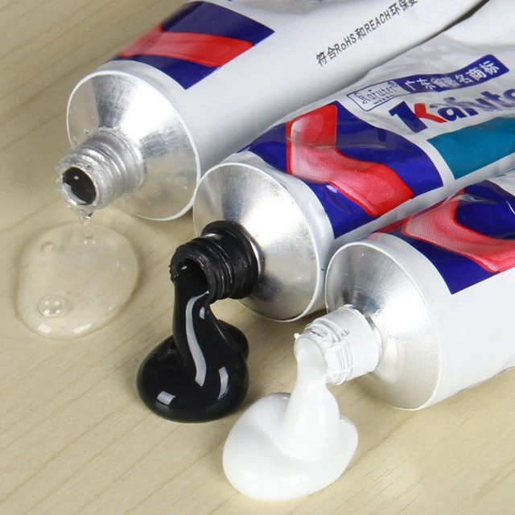
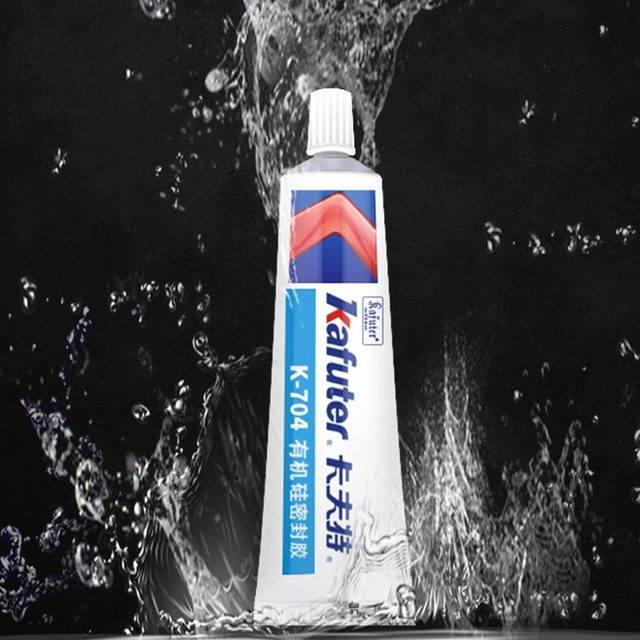
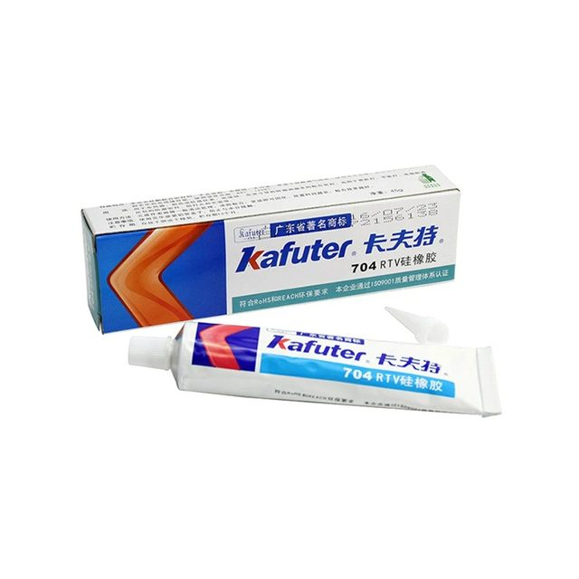
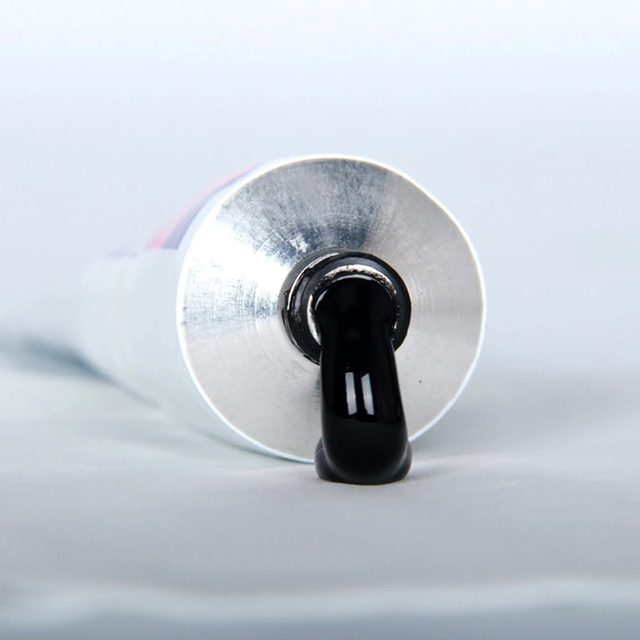
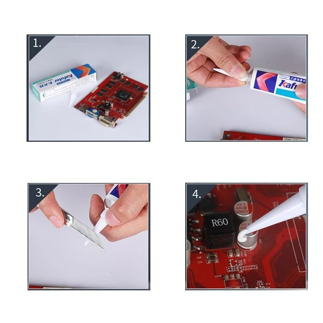
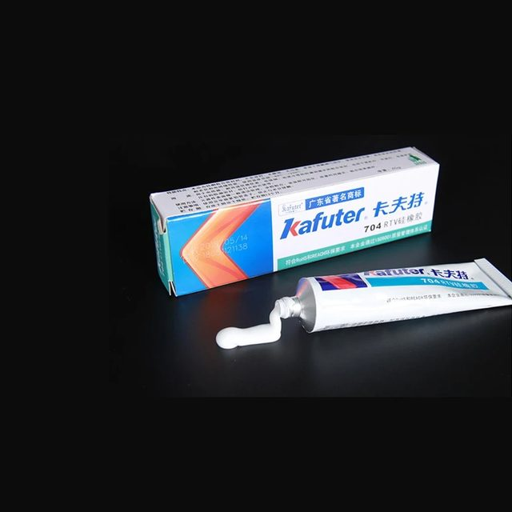

Details:
Kafuter silicone industrial adhesive
It meets the RoHS environmental requirements
It used for positioning, sealing, marking, prevent moisture and loose
It can be used in machinery, electronics, chemicals, hardware industries
It with low torque, good permeability, no corrosion on the plastic, easy to operate, suitable for assembly line jobs.





